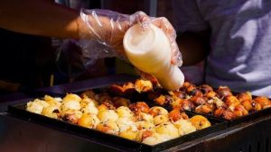

Tips
5 Tips Memilih Pinjaman Modal Usaha Kuliner
Mendapatkan modal usaha kuliner yang cukup untuk memulai atau mengembangkan bisnis adalah hal yang penting bagi para pengusaha.

Namun, tidak semua orang memiliki modal yang cukup untuk memulai bisnis mereka sendiri. Oleh karena itu, banyak pengusaha yang memilih untuk mengajukan pinjaman modal usaha.
Pinjaman modal usaha adalah pinjaman yang diberikan oleh bank atau lembaga keuangan lainnya untuk membantu pengusaha memulai atau mengembangkan bisnis mereka. Namun, sebelum mengajukan pinjaman modal usaha, ada beberapa hal yang perlu kita pertimbangkan. Dalam artikel ini, kami akan memberikan 5 tips untuk memilih pinjaman modal usaha kuliner yang tepat untuk bisnis Anda.
Menghitung Kebutuhan Modal
Sebelum mengajukan pinjaman modal usaha, pertama-tama Anda perlu menghitung kebutuhan modal yang dibutuhkan untuk bisnis Anda. Ini termasuk biaya untuk membeli peralatan, membayar karyawan, dan biaya operasional lainnya. Pastikan Anda menghitung dengan cermat dan tidak meminta pinjaman yang lebih besar dari yang Anda butuhkan.
Menghitung Capital Injection
Capital injection adalah jumlah modal yang dibutuhkan untuk memulai atau mengembangkan bisnis kuliner. Ini termasuk biaya untuk membeli aset tetap seperti gedung atau peralatan, serta biaya untuk membiayai operasional bisnis. Pastikan Anda menghitung capital injection dengan cermat untuk memastikan bahwa Anda meminta pinjaman yang sesuai dengan kebutuhan bisnis Anda.
Memilih Jenis Pinjaman yang Tepat
Ada berbagai jenis pinjaman modal usaha kuliner yang tersedia, seperti pinjaman tanpa jaminan, pinjaman dengan jaminan, dan pinjaman mikro. Setiap jenis pinjaman memiliki persyaratan dan keuntungan yang berbeda. Sebelum memilih pinjaman, pastikan Anda memahami persyaratan dan risiko yang terkait dengan setiap jenis pinjaman.
Pinjaman Tanpa Jaminan
Pinjaman tanpa jaminan adalah pinjaman yang tidak memerlukan jaminan seperti aset atau surat berharga. ini biasanya memiliki suku bunga yang lebih tinggi dan persyaratan yang lebih ketat. Namun, jika Anda tidak memiliki aset yang dapat menjadi jaminan, pinjaman ini bisa menjadi pilihan yang baik.
Baca juga:
10 Alasan Mengapa Anda Harus Membuka Usaha Kuliner
10 Usaha Kuliner Kekinian yang Di Jamin Cepat Balik Modal, Nomor 5 Sangat Di Rekomendasikan
Trik Jitu Pengusaha Kuliner: Rahasia Sukses Meningkatkan Penjualan
Pinjaman dengan Jaminan
Pinjaman dengan jaminan adalah pinjaman yang memerlukan jaminan seperti aset atau surat berharga. Hal iniini biasanya memiliki suku bunga yang lebih rendah dan persyaratan yang lebih fleksibel. Namun, jika Anda tidak dapat membayar pinjaman, terhadap aset yang menjadi jaminan dapat disita oleh pemberi pinjaman.
Pinjaman Mikro
Pinjaman mikro adalah pinjaman yang dikhusus kepada pengusaha kecil dengan jumlah yang juga relatif kecil. Hal ini biasanya memiliki suku bunga yang lebih tinggi dan persyaratan yang lebih ketat. Namun, pinjaman ini dapat menjadi pilihan yang baik untuk pengusaha kecil yang membutuhkan modal yang lebih sedikit.
Membandingkan Suku Bunga dan Biaya Lainnya
Sebelum memilih pinjaman, pastikan Anda membandingkan suku bunga dan biaya lainnya dari berbagai pemberi pinjaman. Suku bunga yang lebih rendah tidak selalu berarti pinjaman yang lebih murah, karena ada biaya lain seperti biaya administrasi dan biaya penalti yang perlu pertimbangkan. Pastikan Anda memahami semua biaya yang terkait dengan pinjaman sebelum membuat keputusan.
Memeriksa Reputasi Pemberi Pinjaman
Memilih pemberi pinjaman yang memiliki reputasi baik adalah hal yang penting untuk meminimalkan risiko dan memastikan bahwa Anda mendapatkan pinjaman yang tepat untuk bisnis Anda. Pastikan Anda memeriksa reputasi pemberi pinjaman melalui ulasan online dan meminta referensi dari pengusaha lain yang telah bekerja dengan pemberi pinjaman tersebut.
Memahami Persyaratan dan Risiko
Sebelum mengajukan pinjaman, pastikan Anda memahami persyaratan dan risiko yang terkait dengan pinjaman tersebut. Persyaratan yang ketat dan biaya yang tinggi dapat membuat pinjaman menjadi lebih mahal dan sulit untuk dibayar. Pastikan Anda memahami semua persyaratan dan risiko sebelum membuat keputusan.
Kesimpulan
Memilih pinjaman modal usaha kuliner yang tepat adalah hal yang penting untuk memulai atau mengembangkan bisnis kuliner Anda. Pastikan Anda menghitung kebutuhan modal dengan cermat, memilih jenis pinjaman yang tepat, membandingkan suku bunga dan biaya lainnya, memeriksa reputasi pemberi pinjaman, dan memahami persyaratan dan risiko yang terkait dengan pinjaman tersebut. Dengan memperhatikan hal-hal ini, Anda dapat memilih pinjaman yang tepat untuk membantu bisnis Anda tumbuh dan berkembang.


Prospek bisnis franchise takoyaki di indonesia camilan kekinian yang bisa jadi peluang bisnis menggiurkan kedepannya

Bisnis franchise takoyaki di Indonesia memiliki prospek yang sangat menjanjikan. Hal ini dibuktikan dengan beberapa faktor berikut:
1. Tingginya Minat Masyarakat terhadap Kuliner Jepang:
- Budaya pop Jepang, seperti anime dan manga, semakin populer di Indonesia, membawa pengaruh terhadap kulinernya.
- Takoyaki, sebagai salah satu jajanan kaki lima khas Jepang, menjadi favorit banyak orang karena rasanya yang gurih dan teksturnya yang unik.
- Tren ini diperkirakan akan terus berkembang, membuka peluang bagi bisnis takoyaki untuk terus bertumbuh.
2. Target Pasar yang Luas:
- Takoyaki disukai oleh semua kalangan usia, mulai dari anak-anak hingga orang dewasa.
- Hal ini menjadikan target pasar untuk bisnis takoyaki sangat luas, sehingga potensinya pun besar.
- Peluang untuk menjangkau konsumen dari berbagai kalangan usia dan latar belakang terbuka lebar.
3. Kemudahan Menjalankan Bisnis:
- Bisnis takoyaki tergolong mudah untuk dijalankan karena tidak membutuhkan modal yang besar dan keahlian memasak yang rumit.
- Bahan-bahan dan peralatan yang dibutuhkan pun mudah didapatkan.
- Hal ini memungkinkan bagi siapa saja untuk memulai bisnis takoyaki, termasuk pemula di bidang kuliner.
4. Keuntungan yang Menarik:
- Takoyaki memiliki margin keuntungan yang cukup tinggi, sehingga potensi untuk mendapatkan keuntungan yang besar terbuka lebar.
- Hal ini tentu menjadi daya tarik bagi para pelaku usaha untuk terjun ke bisnis takoyaki.
5. Fleksibilitas Bisnis:
- Bisnis takoyaki dapat dijalankan dengan berbagai cara, seperti gerobak keliling, booth di mall atau food court, hingga online delivery.
- Hal ini memberikan fleksibilitas bagi para pelaku usaha untuk memilih strategi yang paling sesuai dengan modal dan target pasar mereka.
Strategi Memasarkan Bisnis Takoyaki:
- Lokasi yang Strategis: Pilihlah lokasi yang ramai dikunjungi orang, seperti pusat perbelanjaan, sekolah, atau tempat wisata.
- Promosi Menarik: Tawarkan promo menarik untuk menarik minat konsumen, seperti diskon, paket bundling, atau gratis ongkos kirim.
- Varian Rasa yang Unik: Ciptakan varian rasa takoyaki yang unik dan kekinian untuk menarik perhatian konsumen.
- Penyajian yang Menarik: Sajikan takoyaki dengan cara yang menarik dan instagramable untuk meningkatkan daya tarik produk.
- Pelayanan yang Ramah: Berikan pelayanan yang ramah dan sopan kepada konsumen untuk membangun loyalitas pelanggan.
10 Franchise Takoyaki Terlaris di Indonesia
Bagi Anda yang tertarik untuk terjun ke dunia bisnis kuliner, franchise takoyaki bisa menjadi pilihan yang tepat. Dengan modal dan konsep usaha yang terarah, peluang untuk meraih keuntungan terbuka lebar. Berikut adalah 10 franchise takoyaki yang paling laris di Indonesia saat ini:
1. Takoyakiku
- Modal awal: Rp 3 juta
- Paket usaha: Tersedia 3 paket dengan variasi kelengkapan
- Kelebihan: Modal terjangkau, paket lengkap, bimbingan usaha
2. Lucky Takoyaki
- Modal awal: Rp 3,5 juta – Rp 8,5 juta
- Paket usaha: Tersedia 3 paket dengan variasi isian dan peralatan
- Kelebihan: Pilihan isian beragam, peralatan lengkap, potensi keuntungan besar
3. Daddys Takoyaki
- Modal awal: Rp 3,9 juta – Rp 17,5 juta
- Paket usaha: Tersedia 4 paket dengan variasi booth dan kelengkapan
- Kelebihan: Paket lengkap dengan booth, desain menarik, resep rahasia
4. Shizuka Takoyaki
- Modal awal: Rp 2,2 juta
- Paket usaha: 1 paket standar dengan peralatan dan SOP
- Kelebihan: Modal murah, mudah dijalankan, SOP terstruktur
5. Mr. Takoyaki
- Modal awal: Rp 4 juta
- Paket usaha: 1 paket standar dengan peralatan dan booth
- Kelebihan: Desain booth kekinian, resep takoyaki khas, pendampingan usaha
6. Gokyaki Takoyaki
- Modal awal: Rp 4,5 juta
- Paket usaha: 1 paket standar dengan booth dan peralatan
- Kelebihan: Booth unik dan menarik, resep takoyaki spesial, bimbingan usaha
7. Hiro Takoyaki
- Modal awal: Rp 5 juta
- Paket usaha: 1 paket standar dengan peralatan dan banner
- Kelebihan: Modal tergolong rendah, banner promosi menarik, panduan usaha
8. Tanpopo Takoyaki
- Modal awal: Rp 2,5 juta
- Paket usaha: 1 paket standar dengan peralatan dan SOP
- Kelebihan: Modal terjangkau, SOP terstruktur, panduan usaha
9. Okonomiyaki & Takoyaki
- Modal awal: Rp 3 juta
- Paket usaha: 1 paket standar dengan peralatan dan resep
- Kelebihan: Menawarkan menu okonomiyaki juga, resep takoyaki otentik, panduan usaha
10. Crispi Takoyaki
- Modal awal: Rp 4 juta
- Paket usaha: 1 paket standar dengan booth dan peralatan
- Kelebihan: Booth modern dan eye-catching, resep takoyaki renyah, bimbingan usaha
Baca juga:
Rekomendasi Franchise Makanan Korea Bagi Pengusaha Pemula
6 Contoh Waralaba Luar Negeri Terkenal Di Indonesia
Trik Memilih Supplier Frozen Food yang Tepat untuk Restoran
Tips Memilih Franchise Takoyaki yang Tepat:
- Pertimbangkan modal: Sesuaikan modal dengan paket usaha yang ditawarkan.
- Pelajari kelengkapan paket: Pastikan paket usaha sesuai dengan kebutuhan Anda.
- Pilihlah yang memiliki reputasi baik: Cari tahu testimoni dan review dari franchisee lain.
- Perhatikan rasa dan resep takoyaki: Pastikan takoyaki yang ditawarkan memiliki rasa yang lezat dan khas.
- Pilihlah yang memberikan dukungan usaha: Pastikan franchisee mendapatkan bimbingan dan support dari franchisor.
Memilih franchise takoyaki yang tepat dapat membantu Anda dalam memulai bisnis kuliner dengan lebih mudah dan terarah. Dengan strategi yang matang dan kerja keras, peluang Anda untuk meraih kesuksesan dalam bisnis takoyaki akan semakin terbuka lebar.
Strategi pemasaran yang efektif untuk bisnis takoyaki
1. Kenali Target Pasar Anda:
- Siapa yang ingin Anda jangkau dengan bisnis takoyaki Anda?
- Usia, jenis kelamin, lokasi, dan minat mereka apa?
- Dengan memahami target pasar Anda, Anda dapat membuat strategi pemasaran yang lebih terarah dan efektif.
2. Ciptakan Brand yang Kuat:
- Berikan nama yang unik dan mudah diingat untuk bisnis takoyaki Anda.
- Buat logo dan desain yang menarik dan sesuai dengan target pasar Anda.
- Bangun identitas brand yang konsisten di semua platform pemasaran Anda.
3. Manfaatkan Media Sosial:
- Buat akun media sosial untuk bisnis takoyaki Anda di platform yang populer seperti Instagram, Facebook, dan TikTok.
- Bagikan foto dan video yang menarik tentang takoyaki Anda, proses pembuatannya, dan testimoni pelanggan.
- Adakan giveaway dan kontes untuk meningkatkan engagement dan menarik pengikut baru.
- Gunakan iklan berbayar di media sosial untuk menjangkau target pasar Anda yang lebih luas.
4. Buat Konten yang Menarik:
- Tulis blog atau artikel tentang takoyaki, resep takoyaki, dan tips cara makan takoyaki.
- Buat video tutorial tentang cara membuat takoyaki di rumah.
- Bagikan konten yang informatif dan edukatif tentang budaya Jepang dan kuliner Jepang.
5. Tawarkan Promo dan Diskon:
- Tawarkan promo dan diskon menarik untuk menarik pelanggan baru dan meningkatkan penjualan.
- Buat paket bundling takoyaki dengan minuman atau makanan pendamping lainnya.
- Berikan diskon khusus untuk pelanggan setia atau pada hari-hari tertentu.
6. Adakan Event dan Promosi Offline:
- Ikuti event kuliner atau festival makanan di daerah Anda.
- Bekerjasama dengan kafe atau restoran lain untuk mengadakan event takoyaki bersama.
- Tawarkan layanan catering takoyaki untuk acara ulang tahun, pernikahan, atau acara lainnya.
7. Berikan Pelayanan yang Baik:
- Berikan pelayanan yang ramah dan sopan kepada semua pelanggan.
- Pastikan takoyaki Anda disajikan dengan cepat dan tepat waktu.
- Jaga kebersihan tempat usaha dan peralatan masak Anda.
- Berikan bonus atau hadiah kecil kepada pelanggan setia.
8. Minta Feedback dan Lakukan Evaluasi:
- Mintalah feedback dari pelanggan tentang takoyaki Anda dan pelayanan yang Anda berikan.
- Lakukan evaluasi berkala terhadap bisnis Anda untuk mengetahui kekurangan dan melakukan perbaikan.
- Teruslah berinovasi dan ciptakan takoyaki dengan rasa dan variasi yang baru untuk menarik minat pelanggan.
Tips Tambahan:
- Gunakan platform online delivery seperti GoFood atau GrabFood untuk menjangkau lebih banyak pelanggan.
- Bekerjasamalah dengan influencer atau food blogger untuk mempromosikan bisnis takoyaki Anda.
- Buat program loyalitas pelanggan untuk memberikan reward kepada pelanggan setia.
- Teruslah mengikuti tren terbaru dalam bisnis kuliner dan lakukan inovasi untuk meningkatkan daya saing produk Anda.
Dengan menerapkan strategi pemasaran yang efektif dan tips di atas, Anda dapat meningkatkan peluang untuk menarik konsumen, meningkatkan penjualan, dan membangun bisnis takoyaki yang sukses. Ingatlah bahwa kunci utama dalam bisnis adalah kerja keras, ketekunan, dan inovasi.
Sumber Informasi:
Bisnis takoyaki, jajanan bola-bola tepung berisi gurita asal Jepang, kini menjadi primadona di Indonesia. Rasanya yang gurih dan teksturnya yang unik menarik minat banyak orang, menjadikannya camilan yang digemari segala usia.
Namun, di balik kepopulerannya, memulai dan menjalankan bisnis takoyaki yang sukses membutuhkan kerja keras, strategi yang matang, dan dedikasi. Berikut beberapa tips yang dapat membantu Anda meraih kesuksesan dalam bisnis takoyaki:
1. Siapkan Modal dan Rencana Bisnis yang Matang:
- Hitung modal awal yang Anda perlukan untuk memulai bisnis takoyaki, termasuk biaya sewa tempat, peralatan masak, bahan baku, dan promosi.
- Buatlah rencana bisnis yang detail, meliputi target pasar, strategi pemasaran, proyeksi keuangan, dan strategi pengembangan usaha.
2. Pilih Lokasi yang Tepat:
- Pilihlah lokasi yang strategis dan ramai dikunjungi orang, seperti pusat perbelanjaan, sekolah, area perkantoran, atau tempat wisata.
- Pertimbangkan aksesibilitas lokasi dan target pasar Anda.
- Pastikan lokasi tersebut memiliki izin usaha yang lengkap.
3. Ciptakan Resep Takoyaki yang Lezat dan Unik:
- Eksperimen dengan berbagai resep takoyaki untuk menemukan rasa yang sesuai dengan selera target pasar Anda.
- Gunakan bahan baku yang berkualitas dan segar untuk menghasilkan takoyaki yang lezat.
- Tawarkan variasi rasa takoyaki yang unik dan kekinian untuk menarik minat konsumen.
4. Jaga Kualitas dan Konsistensi Produk:
- Pastikan takoyaki Anda selalu dibuat dengan bahan baku yang segar dan berkualitas.
- Terapkan standar kebersihan yang ketat dalam proses pembuatan dan penyajian takoyaki.
- Jaga konsistensi rasa dan tekstur takoyaki agar pelanggan selalu puas.
5. Berikan Pelayanan yang Ramah dan Cepat:
- Sambutlah pelanggan dengan ramah dan sopan.
- Sajikan takoyaki dengan cepat dan tepat waktu.
- Berikan layanan yang berkesan kepada pelanggan agar mereka kembali lagi.
6. Manfaatkan Promosi dan Pemasaran yang Efektif:
- Gunakan media sosial untuk mempromosikan bisnis takoyaki Anda.
- Tawarkan promo dan diskon menarik untuk menarik pelanggan baru.
- Adakan event dan kerjasama dengan pihak lain untuk meningkatkan brand awareness.
- Manfaatkan platform online delivery untuk menjangkau lebih banyak pelanggan.
7. Lakukan Evaluasi dan Perbaikan Terus Menerus:
- Minta feedback dari pelanggan tentang takoyaki Anda dan pelayanan yang Anda berikan.
- Lakukan evaluasi berkala terhadap bisnis Anda untuk mengetahui kekurangan dan melakukan perbaikan.
- Teruslah berinovasi dan ciptakan takoyaki dengan rasa dan variasi yang baru untuk menarik minat pelanggan.
8. Kelola Keuangan dengan Baik:
- Catat semua pemasukan dan pengeluaran bisnis Anda.
- Pisahkan keuangan pribadi dengan keuangan bisnis.
- Gunakan software akuntansi untuk membantu Anda mengelola keuangan bisnis.
9. Bangun Relasi dan Jaringan Bisnis:
- Bergabunglah dengan komunitas pengusaha atau komunitas pecinta kuliner.
- Bangunlah relasi dengan para pelaku usaha lainnya di daerah Anda.
- Ikuti event dan seminar tentang bisnis dan kuliner.
10. Berikan Nilai Tambah kepada Pelanggan:
- Tawarkan layanan tambahan seperti catering takoyaki untuk acara ulang tahun, pernikahan, atau acara lainnya.
- Berikan bonus atau hadiah kecil kepada pelanggan setia.
- Adakan program loyalitas pelanggan untuk memberikan reward kepada pelanggan setia.
Ingatlah bahwa kunci utama dalam bisnis adalah kerja keras, ketekunan, dan inovasi. Dengan menerapkan tips di atas dan terus belajar serta beradaptasi dengan tren terbaru, Anda dapat meningkatkan peluang untuk meraih kesuksesan dalam bisnis takoyaki.
Sumber Informasi:
- https://www.facebook.com/GoTakoyaki/videos/get-a-chance-to-own-a-top-selling-takoyaki-franchise-that-is-genuine-and-superio/269972304727101/
- https://franchise.daddystakoyaki.com/
- https://irppapercup.com/blog/
Tips Tambahan:
- Pelajari teknik memasak takoyaki yang benar untuk menghasilkan takoyaki yang sempurna.
- Sediakan tempat makan yang nyaman dan bersih bagi pelanggan.
- Gunakan seragam yang rapi dan menarik untuk karyawan Anda.
- Berikan pelatihan kepada karyawan Anda tentang cara membuat dan menyajikan takoyaki, serta cara melayani pelanggan dengan baik.
- Tetaplah mengikuti tren terbaru dalam bisnis kuliner
Laksa Oncom adalah perpaduan dari masakan tionghoa dan melayu yang menciptakan suatu rasa masakan yang khas
Kaya akan cita rasa dan warisan budaya, masakan Indonesia selalu menjadi daya tarik bagi pecinta kuliner di seluruh dunia. Dari Sabang hingga Merauke, setiap daerah memiliki kekhasan kuliner yang memukau. Salah satu hidangan yang tak kalah menggugah selera adalah Laksa Oncom. Terinspirasi dari kekayaan rempah-rempah Indonesia, hidangan ini bukan hanya lezat tetapi juga menggambarkan keanekaragaman kuliner Nusantara.
Mengenal Laksa Oncom
Laksa Oncom adalah hidangan khas Indonesia yang memiliki rasa gurih dan pedas dengan paduan rempah yang kaya. Oncom, yang merupakan salah satu bahan utama dalam hidangan ini, adalah hasil fermentasi biji-bijian yang kaya akan protein. Perpaduan dengan bumbu rempah seperti lengkuas, kunyit, dan cabai, Laksa Oncom menjadi sajian yang menggoda selera.
Asal Usul dan Sejarah
Asal usul Laksa Oncom tak terlepas dari sejarah kuliner Indonesia yang kaya. Meskipun tidak ada catatan pasti tentang kapan dan di mana hidangan ini pertama kali muncul, namun keyakinan Laksa Oncom berasal dari Jawa Barat, daerah yang kaya akan budaya dan tradisi kuliner.
Bahan-Bahan
Untuk menyajikan Laksa Oncom yang lezat, berikut adalah bahan-bahan yang diperlukan:
- Oncom: 200 gram, potong kecil-kecil.
- Laksa: 300 gram, rebus hingga matang.
- Santan: 300 ml, ambil dari kelapa parut.
- Daun Jeruk: 2 lembar, iris tipis.
- Serai: 1 batang, memarkan.
- Daun Salam: 2 lembar.
- Lengkuas: 2 cm, memarkan.
- Kunyit: 2 cm, parut.
- Cabai Merah: 5 buah, iris tipis.
- Cabai Rawit: 3 buah, iris tipis.
- Bawang Merah: 5 siung, iris tipis.
- Bawang Putih: 3 siung, iris tipis.
- Garam: Secukupnya.
- Gula: Secukupnya.
- Minyak: Untuk menumis.
Baca juga:
10 Alasan Mengapa Anda Harus Membuka Usaha Kuliner
Franchise Burger Blenger, Harga, Bahan, Syarat yang di Butuhkan
Menjelajahi Kelezatan dan Keberagaman dengan Nirmala Food: Pilihan Bijak untuk Santapan Sehari-hari
Langkah Pembuatan
- Tumis Bumbu: Panaskan minyak dalam wajan, tumis bawang merah, bawang putih, cabai merah, dan cabai rawit hingga harum.
- Tambahkan Bumbu Lainnya: Masukkan lengkuas, kunyit, serai, daun salam, dan daun jeruk. Aduk hingga tercampur rata.
- Tambahkan Oncom: Setelah bumbu matang, masukkan potongan oncom ke dalam tumisan. Aduk rata hingga oncom terasa empuk.
- Tuangkan Santan: Setelah oncom matang, tuangkan santan ke dalam wajan. Aduk perlahan hingga meresap dan bumbu tercampur sempurna.
- Tambahkan Garam dan Gula: Koreksi rasa dengan menambahkan garam dan gula sesuai selera.
- Penyajian: Siapkan mangkuk, letakkan laksa yang telah direbus di dalamnya, dan tuangkan kuah oncom di atasnya. Hidangkan selagi hangat.
Variasi
Meskipun resep ini sudah sangat lezat, ada beberapa variasi yang bisa kita coba untuk menghadirkan Laksa Oncom dengan nuansa yang berbeda:
- Tambahkan Sayuran: Untuk penyajian yang lebih sehat, tambahkan sayuran seperti tauge atau sawi.
- Sajikan dengan Telur: Tambahkan telur rebus sebagai pelengkap untuk menambah kelezatan hidangan.
- Padukan dengan Mi: Selain laksa, Laksa Oncom juga bisa disajikan dengan mi sebagai pengganti atau tambahan.
Inovasi dan Kreasi Baru
Kuliner terus berkembang dan tak pernah lepas dari inovasi. Begitu pula dengan Laksa Oncom. Beberapa inovasi dan kreasi baru yang bisa dicoba antara lain:
- Laksa Oncom Goreng: Oncom dicampur dengan bumbu rempah kemudian digoreng garing. Sajikan sebagai camilan atau pelengkap makan.
- Laksa Oncom Panggang: Oncom dipanggang dengan bumbu rempah hingga matang dan beraroma harum. Nikmati sebagai hidangan utama dengan nasi hangat.
Kesehatan dan Nutrisi
Laksa Oncom, selain lezat, juga mengandung nutrisi yang baik untuk tubuh. Oncom kaya akan protein nabati, sementara bumbu rempahnya seperti kunyit dan cabai mengandung antioksidan alami yang baik untuk kesehatan.
Kesimpulan
Laksa Oncom adalah salah satu hidangan khas Indonesia yang memukau dengan rasa dan aroma rempahnya yang khas. Dengan kombinasi oncom yang gurih dan bumbu rempah yang kaya, hidangan ini tak hanya menggugah selera tetapi juga mengajak untuk menjelajahi kekayaan kuliner Nusantara. Dengan berbagai variasi dan inovasi yang dapat dilakukan, Laksa Oncom tetap menjadi sajian yang selalu menarik untuk dinikmati oleh pecinta kuliner di mana pun mereka berada.
Top of Form
-
 Kuliner2 tahun ago
Kuliner2 tahun agoKuliner Rumah Jendral: Merasakan Kelezatan dalam Sejuta Kenangan
-
Kuliner1 tahun ago
Analisis Dan Sejarah Kesuksesan Warteg Kharisma Bahari: Strategi Bisnis, Tantangan, dan Prospek Masa Depan
-
Peluang Usaha Kuliner1 tahun ago
Franchise Makanan Terlaris di Indonesia Pada Tahun 2024
-
 Jajan2 tahun ago
Jajan2 tahun agoMerek Makanan Terpopuler di Indonesia 2024: Menyelami Kelezatan yang Menggoda
-
 Jajan2 tahun ago
Jajan2 tahun agoApa itu Health Of Immunity dan Bagaimana Cara Mengatasinya
-
Tips1 tahun ago
Franchise Burger Blenger, Harga, Bahan, Syarat yang di Butuhkan
-
Kuliner1 tahun ago
10 Jenis Usaha Kuliner yang Paling Laku di Bulan Puasa
-
Kuliner1 tahun ago
Franchise Warteg Putra Bahari, Kemitraan Strategis
You must be logged in to post a comment Login